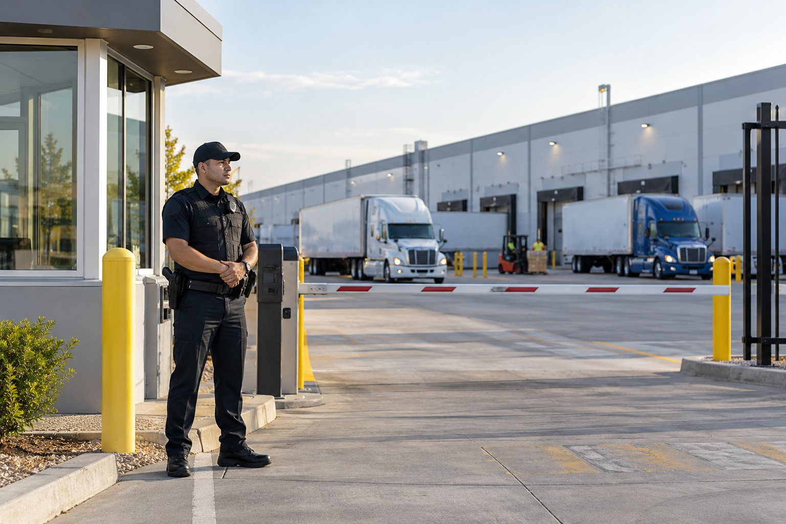

Warehouse and Logistics Security

Warehouse security focuses on the ways people, vehicles, goods and equipment move through a commercial facility. Effective coverage begins with the site's real operating schedule, entrances and high-priority areas, not a generic guard post copied from another property. Paradigm Security can discuss warehouse and logistics assignments designed around the requested access, observation and reporting needs.
Working warehouses are complex environments
A warehouse can be active long before an office opens and long after retail customers go home. Delivery drivers may arrive before dawn, workers may change shifts and contractors may need access to specific areas without entering the whole property. A security plan must distinguish those groups and understand which doors, gates and parking areas are routinely used. Different facilities also contain different types of inventory and equipment, so the risk profile cannot be assumed from the word warehouse alone.
Access points should reflect actual operations
A facility manager may want to review visitor identification, vendor appointments or vehicle arrival procedures. Any access process should be clearly authorized by site management, documented and communicated to people who need to use it. Officers should understand how to handle a delivery that arrives early, a contractor who lacks an appointment or a person seeking help after hours. The goal is an orderly process that supports operations without creating unnecessary confrontation or blocking legitimate work.
Patrol coverage needs defined boundaries
Large warehouses may have loading areas, storage yards, employee parking and perimeter routes that are too dispersed for one static observation point. A discussion of patrol should consider where personnel can safely move and what areas require frequent attention. Lighting, cameras and gate controls can provide information, but the responsibility for monitoring or responding to them must be clear. A guard's presence alone cannot guarantee that theft or trespass will never occur.
Incident records support site management
Reports become more useful when they identify where an event occurred, what was observed, when site contacts were notified and how the situation was resolved or handed over. Patterns in repeated gate problems, lighting issues or unauthorized access attempts may help management prioritize changes. Reporting should remain factual rather than speculative, and private employee or visitor information should be handled appropriately.
A service discussion built around the facility
Paradigm Security's security services can be discussed for warehouses and logistics properties in the company's service area. The starting information is straightforward: the type of facility, operating hours, site access points, desired coverage schedule and any special conditions. Use the existing Request Information CTA to discuss a warehouse security assignment.